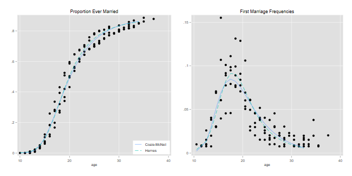
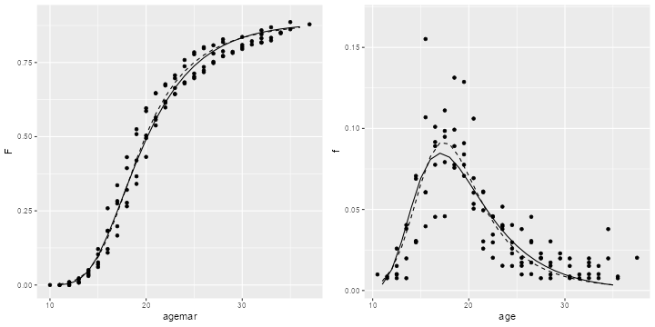
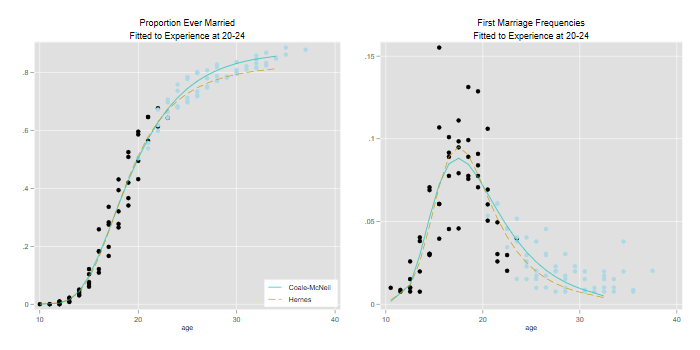
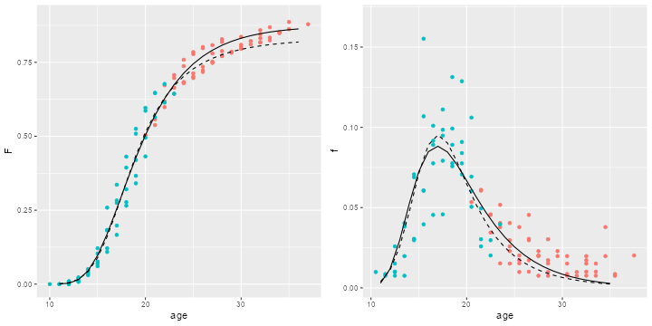

<h2 id="nuptiality-models">Nuptiality Models</h2>
<p>We apply nuptiality models to age at marriage in Colombia using WFS
data. The main objective is to show the use of models to extrapolate
from incomplete cohort experience.</p>

{% include srtabs.html %}

<p>Note: the code below requires the <span class="stata">command
<code>nuptfer</code> in Stata, available here, just type
<code>net from https://grodri.github.io/demography</code>.</span> <span
class="r"><code>nuptfer</code> package in R, which can be installed from
GitHub.</span></p>
<h3 id="the-data">The Data</h3>
<p>We read an extract with age at interview and age at marriage for the
cohort 35-39 in the Colombia WFS with two variables, <code>v010</code>
is age and <code>v109</code> is age at first union, coded missing if
never in union. We treat women married at their current age as single at
the start of the year, thereby avoiding assumptions about partial
exposure, and then group the data by age and age at marriage</p>
<pre class='stata'>. use https://grodri.github.io/datasets/co3539, clear
(COSR02 extract)

. replace v109 = . if v109 >= v010
(74 real changes made, 74 to missing)

. gen n = 1

. rename v010 age

. rename v109 agemar

. collapse (sum) n, by(age agemar)
</pre>
<pre class='r'>> library(haven)
> library(dplyr)
> co &lt;- read_dta("https://grodri.github.io/datasets/co3539.dta")
> cog &lt;- mutate(co, v109 = ifelse(v109 >= v010, NA, v109)) |>
+   group_by(age = v010, agemar = v109) |> summarize( n = n() )
</pre>
<h3 id="modeling-the-complete-experience">Modeling the Complete
Experience</h3>
<p>We want to plot proportions ever married and first marriage
frequencies for each of the single-year cohorts aged 35 to 39, together
with fitted Coale-McNeil and Hernes models. We start by computing the
observed frequencies</p>
<pre class='stata'>. egen N = sum(n), by(age)

. gen f = n/N if !missing(agemar)
(5 missing values generated)

. bysort age (agemar): gen F = sum(f)-f
(5 missing values generated)
</pre>
<pre class='r'>> cog &lt;- group_by(cog, age) |> mutate(f = n/sum(n), F = cumsum(f) - f)
</pre>
<p>Next we compute cumulative model schedules. The estimates for the
Coale-McNeil model were obtained from the paper by Rodríguez and
Trussell (1980), who report a mean of 20.4, a standard deviation of 5.4,
and a proportion eventually marrying of 89%. The estimates for the
Hernes model were computed using a similar maximum likelihood procedure,
and yield an “attractiveness” parameter of 0.65 (at age 15), a decay
rate of 0.15, and a proportion eventually marrying of 89%.</p>
<p>Given the parameters, the schedules temselves were computed using the
<code>nuptfer</code> packages for Stata and R. The cumulative schedules
were then differenced to obtain marriage frequencies by age.</p>
<pre class='stata'>. egen CM = pnupt(agemar), mean(20.436) s(5.377) p(.885)
(5 missing values generated)
(5 missing values generated)
(5 missing values generated)
(5 missing values generated)

. quietly replace CM = . if age != 39 // use 39 to keep model

. egen H = phernes(agemar), a(0.6526) r(.1506) p(.8873)
(5 missing values generated)

. quietly replace H = . if age != 39 // use 39 to keep model    

. sort age agemar // to be sure

. gen cm = (CM[_n+1] - CM)/(agem[_n+1] - agem)
(90 missing values generated)

. gen h = (H[_n+1] -H)/(agem[_n+1] - agem)
(90 missing values generated)
</pre>
<pre class='r'>> library(nuptfer)
> age &lt;- seq(11, 36, 1)
> Fits &lt;- data.frame(age = age, 
+   Coale = pnupt(age, 20.436, 5.377, .885),
+   Hernes = phernes(age, 0.6526, 0.1506, 0.8873))
> dens &lt;- function(x) c(diff(x),NA)
> fits &lt;- mutate_each(Fits, funs(dens), -age)
</pre>
<p>We are ready to plot our results</p>
<pre class='stata'>. twoway (scatter F agem )(line CM H agem, lp(solid dash)) ///
> , title(Proportion Ever Married) xtitle(age) name(F,replace) ///
>   legend(order(2 "Coale-McNeil" 3 "Hernes") ring(0) pos(5) col(1))

. gen agep = agem + 0.5
(5 missing values generated)

. twoway (scatter f agep )(line cm h agep, lp(solid dash)) ///
> , title(First Marriage Frequencies) xtitle(age) ///
>   legend(off) name(f,replace)

. graph combine F f, xsize(7) ysize(3.5)

. graph export co3539a.png, width(700) replace
file co3539a.png saved as PNG format
</pre>
<p></p>
<pre class='r'>> library(ggplot2)
> library(gridExtra)
> g1 &lt;- ggplot(cog, aes(agemar,F)) + geom_point() +
+   geom_line(data = Fits, aes(age, Coale), linetype=1) +
+   geom_line(data = Fits, aes(age, Hernes), linetype=2)
> g2 &lt;- ggplot(cog, aes(agemar + 0.5, f)) + xlab("age") + geom_point() +
+   geom_line(data = fits, aes(age, Coale), linetype = 1) +
+   geom_line(data = fits, aes(age, Hernes), linetype = 2)
> g &lt;- arrangeGrob(g1, g2, ncol = 2)
> ggsave("co3539ar.png", plot = g, width = 10, height = 5, dpi=72)
</pre>
<p></p>
<p>The general fit of the models to noisy data is excellent. As usual,
it is easier to appreciate differences working with densities rather
than with cumulative distributions. The Hernes model leads to a
distribution a bit more peaked than the Coale-McNeil (dashed and solid
lines respectively).</p>
<h3 id="predicting-15-years-earlier">Predicting 15 Years Earlier</h3>
<p>We will now simulate what would have happened if we had interviewed
these cohorts 15 years earlier. We assume women who had married by then
would have reported the same age at marriage, but the rest would have
reported themselves as never married. To emphasize how little data we
would have, I have redraw the plot below using a different color for
data points “in the future”.</p>
<p>Rodrguez and Trussel (1980) fitted the Coale-McNeil to the censored
cohort and obtained a mean of 20.2, a standard deviation of 5.1 and an
estimated 87% eventually marrying. The fact that the estimates obtained
when the cohort was 20-24 are so close to the estimates obtained when it
was 35-39 is nothing short of remarkable.</p>
<p>I wemt ahead and fitted the Hernes model to the same censored
experience and obtained an attractiveness parameter of 0.73 (at age 15),
a rate of decay of 0.18 per year, and a proportion eventually marrying
of 83%.</p>
<p>Here’s the code used for the two panels</p>
<pre class='stata'>. // Left
. gen observed = agem &lt; age-15

. egen CMc = pnupt(agem) , mean(20.1528) s(5.0955) p(.8740)
(5 missing values generated)
(5 missing values generated)
(5 missing values generated)
(5 missing values generated)

. quietly replace CMc = . if age != 39

. egen Hc = phernes(agem), a(0.7321) r(.1875) p(.8296)
(5 missing values generated)

. quietly replace Hc = . if age != 39

. twoway (scatter F agem if obs) (scatter F agem if !obs, color(ltblue)) ///
>   (line CMc Hc agem, lp(solid dash) ) , ///
>   title(Proportion Ever Married) subtitle(Fitted to Experience at 20-24) ///
>   legend(order(3 "Coale-McNeil" 4 "Hernes") ring(0) pos(5) col(1)) ///
>   xtitle(age) name(Fc,replace)

. // Right
. gen cmc = (CMc[_n+1]-CMc)/(agem[_n+1] - agem)
(90 missing values generated)

. gen hc = (Hc[_n+1] - Hc)/(agem[_n+1] - agem)
(90 missing values generated)

. twoway (scatter f agep if obs) (scatter f agep if !obs, color(ltblue)) ///
>   (line cmc hc agep, lp(solid dash)) ///
>   , title(First Marriage Frequencies) subtitle(Fitted to Experience at 20-24) 
> ///
>     xtitle(age) legend(off) name(fc,replace)

. graph combine Fc fc, xsize(7) ysize(3.5)

. graph export co3539c.png, width(700) replace
file co3539c.png saved as PNG format
</pre>
<p></p>
<pre class='r'>> cog &lt;- mutate(cog,  observed = factor(agemar &lt; age - 15, labels=c("no","yes")))
> Fits &lt;- data.frame(age = age, 
+   Coale = pnupt(age, 20.1528, 5.0955, 0.8740),
+   Hernes = phernes(age, 0.7321, 0.1875, 0.8296))
> fits &lt;- mutate_each(Fits, funs(dens), -age)
> g1 &lt;- ggplot(cog, aes(agemar,F, color=observed)) + xlab("age") + geom_point() +
+   geom_line(data = Fits, aes(age, Coale, color=NULL), linetype=1) +
+   geom_line(data = Fits, aes(age, Hernes, color=NULL), linetype=2) +
+   theme(legend.position = "none") 
> g2 &lt;- ggplot(cog, aes(agemar + 0.5, f, color=observed)) + xlab("age") + geom_point() +
+   geom_line(data = fits, aes(age, Coale, color=NULL), linetype=1) +
+   geom_line(data = fits, aes(age, Hernes, color=NULL), linetype=2) + 
+   theme(legend.position = "none")
> g &lt;- arrangeGrob(g1, g2, ncol = 2)
> ggsave("co3539cr.png", plot = g, width = 10, height = 5, dpi = 72)
</pre>
<p></p>
<p>It seems clear that the Coale-McNeil does a better job predicting in
this particular case. The Hernes model appears to adapt too well to the
data at the younger ages, and as a result doesn’t predict as well for
the older ages.</p>
<p>Things don’t always work this well. As shown in my paper with
Trussell, the data for the oldest cohort, 45-49, are a bit more noisy
and the prediction from the cohort’s early experience is not as good.
Trying to predict the future course of nuptiality is a risky business,
and all models rely on the basic assumption that the past says something
about the future.</p>
<h3 id="reference">Reference</h3>
<p>Rodríguez G. and Trussell J. (1980). Maximum Likelihood Estimation of
the Parameters of Coale’s Model Nuptiality Schedule from Survey Data.
Word Fertility Survey Technical Bulletins*, No. 7. <a
href="https://wfs.dhsprogram.com/WFS-TB/ISI-WFS_TB-07_Rodriguez%20&amp;%20Trussell_1980_Maximum%20Likelihood%20Estimation%20of%20the%20Parameters%20of%20Coale&#39;s%20Model%20Nuptiality%20Schedule%20from%20Survey%20Data.pdf">View
on DHS site</a>.</p>
